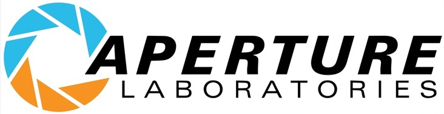

Overview
Purpose
We do what we must, because we can.
Audience
For the good of all of us... except the ones who are dead.
Branding
Website Logo
Style Guide
Color Palette
Palette URL:
https://coolors.co/f3f3f6-0a0a0a-f79321-396e94-ffffff| Primary | Secondary | Accent 1 | Accent 2 |
|---|---|---|---|
| [#F3F3F6] | [#0A0A0A] | [#F79321] | [#396E94] |
Typography
Heading Font: Oswald
Paragraph Font: Noto Sans Japanese
Normal paragraph example
Aperture Science, Inc. is a United States-based scientific research corporation appearing as the main antagonistic organization in Portal and Portal 2, as well as its logo on the Borealis in Half-Life 2: Episode Two. The main facility is the Aperture Science Enrichment Center, located in Upper Michigan, with at least one other base of operations in Cleveland, Ohio. Originally a shower curtain manufacturer named Aperture Fixtures, it evolved over the course of half a century into an experimental physics research institution and a bitter rival of Black Mesa.
Colored paragraph example
"The Future is Here, and it's Under the Earth's Crust" ―Front page article celebrating Johnson's purchase of the Michigan salt mines. Aperture Fixtures was founded in the late 1940s by Cave Johnson as a shower curtain manufacturer - the name "Aperture Fixtures" was chosen "to make the curtains appear more hygienic" - and by 1943 Cave's company was routinely earning the annual shower curtain salesman award. Using his newly accumulated funds, Cave invested in real estate and purchased a vast, decommissioned salt mine in Michigan in January 1944. Aperture Science Innovators was incorporated in 1947, receiving the Best New Science Company Award that same year, granted by the Science and Business Institute of America. Its long rivalry with Black Mesa started at the same time: Aperture was #2 on the Top 100 Applied Science Companies ranking for 1949, starting a pattern that would never be broken.
Navigation
Site Map
Wireframes
Home